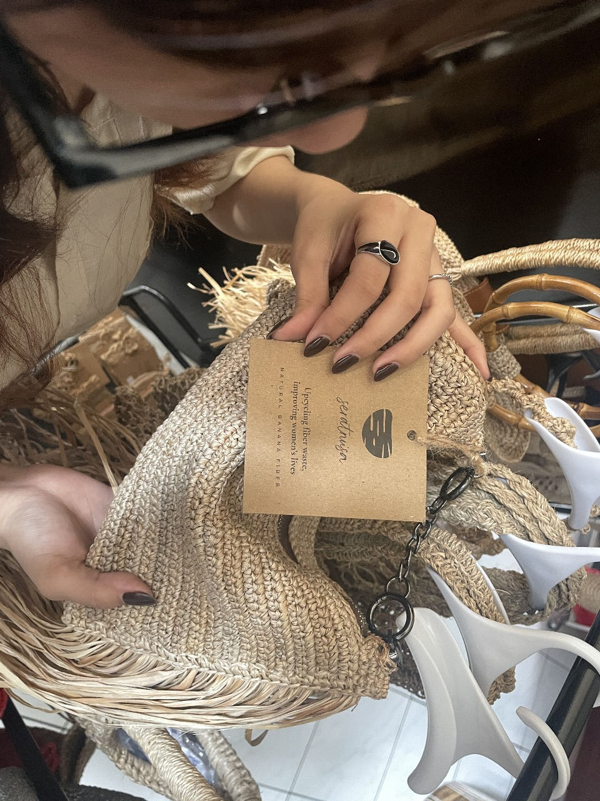
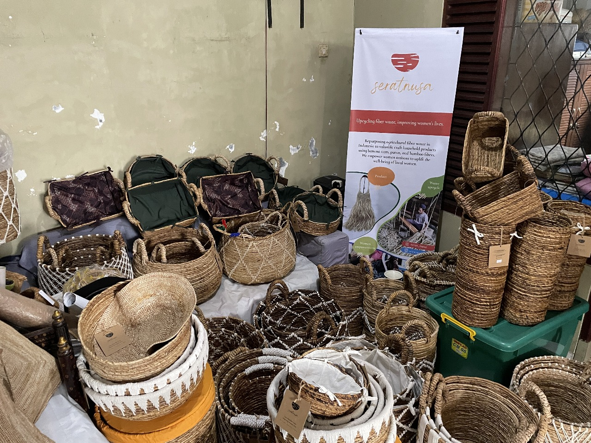

HISTORY

Seratnusa mengangkat gedebog pisang, batang pisang yang dikeringkan dan diolah menjadi karya seni dan kerajinan bernilai tinggi.
Dibentuk dengan tangan-tangan terampil para pengrajin lokal, setiap produk Seratnusa bukan hanya barang, tapi juga cerita: tentang pelestarian alam, pemberdayaan masyarakat, dan cinta terhadap budaya.
Kami percaya bahwa yang alami adalah indah, yang tradisional bisa jadi modern, dan yang lokal bisa mendunia.
Seratnusa bukan sekadar produk ramah lingkungan. Ia adalah suara dari alam dan budaya, dijalin dalam serat-serat kehidupan nusantara.
FOUNDER’S
Ir.Rr.Gita Noerwardhani
Pendiri Seratnusa, sosok yang meyakini bahwa limbah bukan akhir dari sebuah benda, melainkan awal dari kehidupan baru.
Berbekal latar belakang pertanian dan ketekunan sebagai aktivis lingkungan, Gita memulai dari sesuatu yang sederhana: mengelola sampah organik rumah tangga dan mengajak masyarakat untuk memilah dan mendaur ulang.
Ia melihat potensi besar dalam gedebog pisang—limbah batang pisang yang sering terabaikan. Dari sinilah lahir Seratnusa, gerakan yang menyatukan lingkungan, budaya, dan pemberdayaan masyarakat, terutama perempuan desa.
Ia bahkan menjual aset pribadinya demi menjaga idealisme dan tidak bergantung pada pemerintah atau korporasi.
STUDIO SERATNUSA

Alamat: Jalan Intan No. 26,
Sadang Serang Kelurahan Sekeloa, Kecamatan Coblong,
Bandung